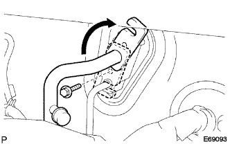
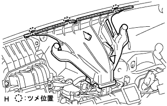
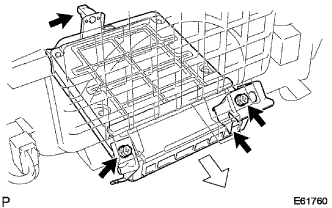
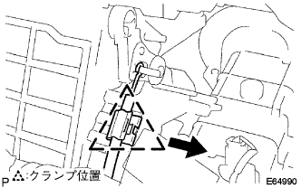
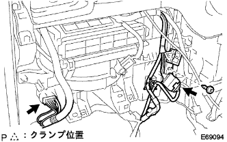
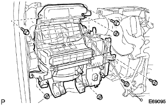

Air conditioner brois ASSY removal |
| 1. Refrincer HFC-134A (R134A) extract |
Turn on the A/C switch.
Driving a cooler compressor for 5-6 minutes for about 1000R/min, circulating the refrigerant cycle in the refrigerant, and collecting the compressor oil remaining in each functional component into the cooler compressor as much as possible.
Stop the engine.
Connect the regeneration machine, extract the refrigerant gas.
| 2. Cooler flavored sorting hose No.1 removed |
|  |
Remove the bolt and remove the hook -type connector.
Cooler Refrisalando Saccussion Horse No. 1 is separated.
Remove the O -ring from the No. 1 Cooler Refrisalant Suxukon Horse.
| 3. Liquid tube SUB-ASSY A |
Separate Liquid Tube A.
Remove the O -ring from the liquid tube A.
| 4. Instrument panel SUB-ASSY LWR is removed |
reference)| 5. Defrosta nozzle ASSY is removed |
|  |
Remove the claws and remove the deflo -stormozle ASSY.
| 6. Remove the engine control computer |
|  |
Cut the connector.
Take off two screws.
Remove the claws and remove the engine control computer.
| 7. Air Inlet Danpa Control Cable SUB-ASSY |
|  |
Pull the outer cable in the direction of the arrow and disconnect the outer cable from the clamp.
Remove the inner cable and remove the air -in leettodan pupon control cable.
| 8. Air conditioner brois ASSY |
|  |
Remove the screw, clamp and connector and separate the wire harness.
|  |
Remove two bolts, three nuts and two screws, and remove the air conditioner brois ASSY.